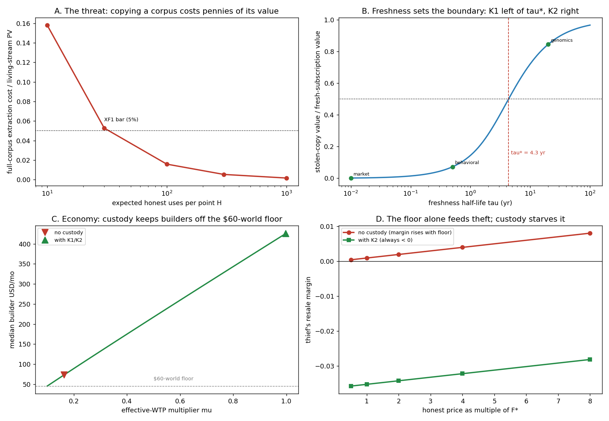

In plain language
Companion to RESULTS - v37.0 Exfiltration & Pricing.md. July 18, 2026. — v2, same day: rewritten at the owner's request to explain the mechanics in practice and define every piece of jargon with examples and analogies. v1 kept for history. Every number traces to results_v37.json; this is a model of the design, not a forecast.
The two questions
One: what stops a government or an AI lab from paying pennies to read a huge pile of EDEN data, copying it into their own database, and never paying again — draining the system's value into the outside world?
Two: should people set their own price for their data, and can a minimum price stop outside pressure from forcing EDEN's members to sell themselves cheap?
They turned out to be one question wearing two hats. But first, the words.
Two different "floors" — don't mix them up
EDEN now has two minimum-price ideas, and from here on the docs keep their names separate:
- THE FLOOR (unqualified) always means the essentials floor — the guarantee that a person can afford basic needs (food, energy, shelter). It's about people's survival.
- THE MINIMUM ASK is the data-price minimum — the lowest price anyone's data can sell for on the network. It's about people's bargaining power.
They rhyme (both are indexed to the cost of essentials, so inflation can't quietly erode either one), but one feeds you and the other stops your data being haggled down to nothing. This note is about the second one.
Part 1 — The copy attack is real and cheap
If a buyer has permission to read data, copying it is just reading it once and keeping what you saw. In the model, copying an entire valuable archive costs about 1.6% of what that archive would earn over its life — and the most valuable data is even cheaper to take, because of a well-meaning discount (explained below). So yes: as originally designed, a well-funded institution could lift EDEN's crown jewels for a rounding error and grow on them forever, outside the system, never paying again.
The accidental discount for thieves. EDEN deliberately lets a data point's price fade as it gets used more (so early sharers can't lock in a permanent lead over late sharers — a fairness feature). Side effect: the most-used, most-valuable data became the cheapest to vacuum up in bulk. The fix keeps the fairness and removes the loophole: the fade stays per point, but each buyer is priced on their own rising curve — the more one buyer pulls in total, the more their next pull costs. Think of a happy-hour discount that applies to the drink, not to the customer trying to buy the whole bar.
Part 2 — "Freshness": the shield that's just physics
Every dataset in EDEN is tagged with how fast it goes stale — its freshness half-life, the time it takes for half its value to evaporate. Like groceries: fish is worthless in days, canned goods last years. Data works the same way:
- Market and price data — stale in hours to days. A hedge fund that copies today's consumer-sentiment stream and cancels its subscription is, two weeks later, trading on rotten fish while its competitors trade on the fresh catch. The copy punishes itself; nobody has to enforce anything. In the model, a stolen snapshot of this class is worth 0.1% of just staying subscribed.
- Behavioral trends — stale in months. A stolen copy holds ~7% of a live subscription's value. Still a bad deal.
- DNA and foundational science — and yes, "genome archive" means DNA data: the sequenced genetic code of the people who chose to contribute it for medical research. Your genome basically never changes. A copy stolen today is still ~85% as useful in ten years. Freshness protects nothing here — which is why this class gets the strictest handling (Part 4).
The crossover lands at roughly a four-year half-life: data that spoils faster defends itself; data that spoils slower needs walls.
Part 3 — Selling data that leaves: the export license
For the fast-spoiling stuff, EDEN can safely sell actual copies. That's a K1 export license — "K1" is just the label for custody class 1 (the classes run K0–K3, from "public, anyone may copy" to "locked vault"). Here's how one works in practice:
- Who can buy one: only a KYC'd institution. "KYC" is bankers' shorthand for Know Your Customer — the same identity check a bank runs before opening your account. In EDEN, real-world identity attaches at the fiat bridge (the doorway where regular money enters and leaves the network), so an export buyer is a named, legally accountable company — not an anonymous account.
- What they get: the actual files — salted with canaries. Mapmakers used to draw fake streets on their maps; if a rival's map showed the fake street, they'd proven the copying in court. Canary records work the same way: invisible-in-practice markers that identify whose licensed copy leaked if the data ever surfaces somewhere it shouldn't.
- What they pay: the "forever price." Since the bytes leave and can be reused indefinitely, the license is priced near what perpetual use would have cost — a large multiple of the per-use rate. The price already assumes the copy is forever, so there's nothing left to steal by copying it.
- What holds them to it: three layers. A signed contract (ordinary courts — remember, they're a named company). A posted bond — a security deposit that gets forfeited ("slashed") on breach. And permanent on-network reputation for the company and the humans anchored to it. Honest limit: catching a breach is probabilistic, not certain — which is why K1 is only offered where staleness is already doing most of the protective work.
Part 4 — Data that never leaves: the reading room
For the slow-spoiling crown jewels — DNA archives, decades-stable scientific datasets — copies can't be sold safely at any price. So the data never leaves. This is K2, "compute-to-data": instead of shipping the data to the buyer's computers, the buyer's question travels to the data.
The best analogy is a rare-books reading room. You can come in, read anything, take notes, even write your book from what you learn. What you cannot do is walk out with the archive — and the librarian keeps a running count of how many pages you've photocopied, with each additional copy costing more than the last.
In practice: a pharmaceutical company doesn't download a million genomes. It submits its research job — "do carriers of gene X respond differently to drug Y?" or even "train this diagnostic model" — the job runs inside EDEN's custody, and only the answer comes out. Every answer carries some information, so each buyer has an egress budget (egress just means "what exits"): a running meter of total information that buyer has taken out, priced on a curve that steepens as it grows. Even a trained model counts against the meter, because models can memorize their training data.
Why the meter matters: a determined buyer could try to reconstruct the archive by asking millions of clever questions — the way you could theoretically photocopy a whole library one page a day. The rising curve makes that stunt cost about 500× an honest subscription in the model. Not impossible — ruinous. And the meter is per-owner, not per-account: a company that splits itself into ten shell accounts to get ten budgets runs into the same ownership-registry rules that stop shell games everywhere else in EDEN.
Does the reading room scare off honest customers? Barely — about 90% of legitimate buying survives in the model, because the honest alternative to EDEN's consented, high-quality data is scraping the open web for unconsented junk. The only "customer" the vault stops is the one who came to empty it.
And one more protection for DNA specifically: individual-level genetic data can be held a step stricter still (K3, aggregate-only) — researchers get statistical answers about groups, never any one person's sequence, on top of the anonymization and consent choices that already govern everything in EDEN.
Part 5 — Subscriptions: how paying for living data actually works
"Subscription" here doesn't mean a Netflix-style flat fee (though bundles like that exist too). It means ongoing, metered access to data that keeps refreshing — and the key facts are:
- Prices are posted, not surprises. Every data type has a protocol price built from three published pieces: the minimum ask × a type multiplier × a freshness factor (fresher costs more). Your software can compute the exact cost of any access before making it — like a cloud-computing price sheet or a taxi meter with the rates printed on the door. For bigger jobs, you get a quote up front, the way a contractor bids a project.
- Your agent handles it. Nobody clicks "buy" a thousand times a second. Each participant — buyer and seller — has an ADAM (their software agent, think of it as a broker-librarian) that negotiates, transacts, and keeps receipts automatically under rules and budgets its owner set. A buyer's ADAM might have standing instructions like "keep my model updated with fresh sentiment data, budget 500 EVE a month, alert me at 80%."
- Payment and delivery are automatic and simultaneous. Each access triggers an instant EVE transfer that splits automatically among everyone entitled — the contributors whose data it is (always the largest share, anchored to them by rule), and the coordinator's capped cut if a company organized the dataset. There's no invoice, no collections, no "we'll pay you in 90 days." The receipt lands on the public ledger.
- Sellers set asks; the network sets the bottom. Anyone can price their data above the minimum ask and accept selling less often (a boutique, not a supermarket). Nobody — including you, in a desperate month — can be pushed below the minimum ask. And the recommended "fair market rate" the owner asked about? The network publishes it as advice, like a Kelley Blue Book for data, but never enforces it — because any committee that could set binding prices would become the juiciest thing in the system to capture.
Part 6 — Why the minimum ask exists (and what it can't do alone)
Without a minimum, data prices race to the bottom, because a buyer doesn't need your data — they need enough people's data, and someone desperate will always sell for less. In the model, unrestricted price competition collapsed the going rate to about 5% of what the market would genuinely bear, and roughly 90% of sellers would have undercut the minimum if allowed — under money pressure, almost everyone breaks ranks. That's why the minimum ask is non-waivable: it's a collective bargaining position, the same way you can't sell your EDEN account itself. (For the curious: the model also suggests the current minimum is set conservatively — the revenue-sweet-spot is roughly 13× higher — but the honest deliverable is the method for calibrating it against real-world demand, which the pilot will measure. Don't quote the 13× as a promise.)
But here's the twist that ties the whole note together: a minimum price, by itself, makes theft more attractive, not less. A high honest price is a fat margin for whoever undercuts it with a stolen copy — raise the floor price and you fatten the thief's markup. In the model the thief's profit rises with every step up in the honest price… until custody enters. With the reading-room rules in place, the thief's cost to rebuild the archive exceeds anything they could resell it for, and their margin goes negative at every price level.
So: the minimum ask protects the price of the honest, living stream. Custody destroys the value of the stolen copy. Freshness decides which one has to do the work. Any one alone fails; together, in the model, they keep EDEN's builder economy at full strength (~$426/month for the median builder) instead of collapsing toward the $60-world where only the charity-funded essentials floor survives.
Words used here (quick reference)
The floor — the essentials guarantee for people. The minimum ask — the lowest allowed price for data. KYC ("Know Your Customer") — the bank-style identity check; applies to institutions at the fiat bridge. Fiat bridge — the doorway between EVE and ordinary money, where real-world identity attaches. K0–K3 custody classes — how tightly data is held, from public (K0), to export-licensed copies (K1), to the reading room (K2), to aggregate-answers-only (K3). Compute-to-data — the question travels to the data; the data never travels to the questioner. Egress budget — a buyer's running meter of information taken out, priced on a rising curve. Canary — a hidden marker (the mapmaker's fake street) that proves whose copy leaked. Bond — a security deposit forfeited on cheating. Freshness half-life — how long until data loses half its value. ADAM — your software agent/broker that transacts on your behalf under your rules. Anchored — every business and dataset ties back to one accountable, verified human on the ownership registry (accountable doesn't mean public: the network verifies it's one real, unique, living person without needing their name — names attach only where the outside legal world does, at the bridge and on export licenses).
Written July 18, 2026 (Fable 5, owner-directed; v2 same day at owner request — jargon defined, mechanics made concrete). Every claim traces to results_v37.json; honest limits (stylized model — real willingness-to-pay, real audit costs, and real copy-resistance are pilot questions) are in the RESULTS file. Note: the custody/pricing rule set is DR-20, PROPOSED — evidence in hand, awaiting owner ratification.
Figures

Technical results
Run: July 18, 2026. Spec: v37 SPEC - Exfiltration & Pricing (registered).md — bars XF0–XF8 fixed before code. Engine: exfiltration_pricing_sim.py (deterministic; the only RNG is seller-reservation and buyer-WTP draws, seeds 7 + 11; import-guarded). Committed: results_v37.json, fig_v37_exfiltration_pricing.png. The builder-economy chassis is a two-point reduced-form transfer function anchored EXACTLY on the committed v16 endpoints (μ=1.0: median builder $426.65, share ≥$200 0.8854, endog coverage 0.1323; μ=0.1: $45.30, 0.0277, 0.0717) plus a registered monotone power-law interpolation. (Correction, July 18 verification pass — VERIFICATION v6 D1: the low endpoint was first transcribed rounded (45.33/0.028/0.0717); the engine now carries the committed v16 values at full precision (45.30022…/0.0276594…/0.0717283…), artifacts re-committed, all bars and headlines unchanged at reported precision. The SPEC's anchor table retains the original rounded transcription — annotated there rather than edited, per bars-don't-move.) Every number below traces to results_v37.json. Produced by Claude Fable 5, owner-directed [FABLE] cell.
Verdict in one line: the exfiltration attack is real and cheap — copying a whole corpus costs ~1.6% of its living-stream value at central reuse — and the owner's pricing instinct was half-right in a load-bearing way: the non-waivable EBI-indexed floor already in canon (ADAM §3) is exactly the collective-bargaining defense against outside price pressure (without it, abundant substitutable supply collapses the clearing price to ~5% of the revenue-optimal reserve, and ~90% of sellers would undersell it if allowed), BUT a floor alone does not stop exfiltration and in fact makes theft more profitable (a higher honest price is a fatter margin for a stolen copy); what stops exfiltration is custody matched to freshness half-life — for short-lived data the copy goes stale before it amortizes so an export license suffices, for long-lived data (genomics-class) only compute-to-data with a per-buyer egress budget holds, and that stack keeps the effective-WTP multiplier at 1.0 and the builder economy at its full $426/mo instead of collapsing to the $60-world. Pricing and custody are one system: the floor holds the price of the living stream, custody holds the price of the stolen copy, and freshness (τ* ≈ 4.3 yr) decides which one binds. 9/9 bars PASS.
Bar summary (9 PASS)
| Bar | Registered | Measured (seed 7; seed 11 in JSON) | Result |
|---|---|---|---|
| XF0 anchors | transfer fn reproduces both v16 endpoints exactly; decay ladder + floor reproduce | μ=1.0 → 426.65 / 0.8854 / 0.1323 exact; μ=0.1 → 45.30 / 0.0277 / 0.0717 exact vs the committed JSON (post-D1 correction); ×0.1 step, disc 5e-5, floor 1e-4 | PASS |
| XF1 threat real | full-corpus extraction ÷ living-stream PV ≤ 0.05 at central H | 0.0158 (H=100); ranges 0.158 (H=10) → 0.0016 (H=1000) | PASS |
| XF2 custody bounds leak | K2 steal-ratio ≥ 5× (genomics); monotone in β↑, φ_r↓ | 509.9× central; β: 173→510→5527; φ_r: 8438→510→114→53; both monotone | PASS |
| XF3 freshness boundary | K1 suffices short-τ, K2 required long-τ; τ* interior | market 0.0014, behavioral 0.072 (K1 ok); genomics 0.845 (K2); τ* = 4.35 yr | PASS |
| XF4 economy protected | custody keeps μ ≥ 0.5; no-custody ≤ 0.2 | with custody μ=1.00 ($426/mo); no custody μ=0.16 ($73/mo) | PASS |
| XF5 participation | K2 friction keeps buyer index ≥ 0.60 | 0.900 (seed 11: 0.901) | PASS |
| XF6 pricing regime | (a) no-floor clearing ≤ 0.1× F*; (c) waiver share ≥ 0.5 | (a) 0.048×; (c) 0.895; (b) F* = 13.5× canon; (d) 18% ask at floor | PASS |
| XF7 floor × theft | (a) margin non-decreasing in floor w/o custody; (b) F*+K2 joint holds | (a) rises 0.0004→0.008; (b) K2 margins all < 0 (−0.036→−0.028); joint holds | PASS |
| XF8 harness | byte-identical double run; seeds agree | three byte-identical runs (2 dev + committed vault, sha256); seeds agree ≤ 1.1% | PASS |
Findings
F1 — Copying a corpus is pennies on the dollar (XF1). A buyer with legitimate read access pays the floor per access and keeps what it reads; one read per point copies the corpus. At central reuse (H=100 honest machine-uses per point over its life), full-corpus extraction costs 1.6% of the corpus's living-stream PV (xf1_threat.central_ratio). The ratio is 1/(H × discount), so it worsens as data is more valuable: at H=1000 (heavily-reused foundational data — the crown jewels) extraction is 0.16% of value. The owner's fear is confirmed quantitatively: under current per-access terms with no custody, an institution can lift EDEN's most valuable corpora for a rounding error and grow on them outside the system forever. (The §2b usage-decay ladder makes this worse, not modeled as a separate bar but noted: heavily-used points are the cheapest to read, so the most valuable corpora are the cheapest to steal — the decay-ladder repair in DR-20 addresses this.)
F2 — Compute-to-data with a per-buyer egress budget bounds the leak by orders of magnitude (XF2). Under K2 (corpus never leaves; queries answered; per-buyer cumulative egress priced on a rising convex curve), reconstructing the full corpus costs 509.9× the honest bounded-use cost at central dials (xf2_custody.central). The defense strengthens with budget-curve steepness β (173× → 5527× across β ∈ {1,2,4}) and with lower reconstruction efficiency (φ_r=0.1 → 8438×; φ_r=0.9 → still 53×). This is the demand-side rhyme of v36's beneficial-owner aggregation: the budget must aggregate across commonly-owned buyer accounts or a buyer splits the reconstruction across shells (the DR-19 machinery, reused — flagged, not re-simulated here).
F3 — Freshness decides which custody class you need, and the boundary is ~4 years (XF3). A stolen copy loses value at the data's freshness half-life; the question is whether it goes stale before it pays for itself. Stolen-copy value as a fraction of always-fresh subscription value: market data (τ=0.01yr) 0.14%, behavioral streams (τ=0.5yr) 7.2% — for both, the copy is worthless fast, so K1 (export-licensed, priced at perpetual-use PV) suffices: let the bytes leave, they rot. Genomics-class (τ=20yr) 84.5% — a decade-old copy is barely stale, so K1 fails and only K2 holds. The custody-class boundary sits at τ* = 4.35 years (xf3_freshness.tau_star_yr): below it freshness is the moat, above it the bytes must not leave at bulk. This is the design rule DR-20 encodes — custody class is chosen against freshness_domain, not one-size-fits-all.
F4 — Custody is what keeps the builder economy alive (XF4). Routed through the committed v16 transfer function: with no custody, exfiltration drives the effective-WTP multiplier to μ = 0.16 — median builder $73/mo, share ≥$200 collapsing toward the $60-world (xf4_economy.builder_no_custody). With the K1/K2 stack applied per the τ* boundary, residual leak is bounded (F2) and μ = 1.00 — the full $426/mo builder economy survives. Exfiltration is not an edge leak; it is the mechanism that produces the v16 $60-world where builder/self-funding promises break (the safety floor survives either way, sponsor-backed — consistent with v16). Custody is the difference between EDEN's builder economy existing and not.
F5 — Compute-to-data does not scare off legitimate buyers (XF5). K2 friction (no raw bulk export; query-metered) retains 90.0% of frictionless-bulk buyer participation (xf5_participation.central; seed 11: 0.901), because the honest buyer's counterfactual is scraped/synthetic substitutes (Pre-Mortem grave #2) that are lower-quality and unconsented — metered access to real consented data still wins. The AI lab that wanted to use the data is barely inconvenienced; only the lab that wanted to take it is stopped. (Honest dependency: this rides the assumed substitute-cost and WTP dispersion — pilot must supply the real ones.)
F6 — The owner's floor instinct is right, and canon already has it — but it is uncalibrated (XF6). (a) Remove the floor and let sellers freely compete under abundant substitutable supply, and the clearing price collapses to 4.8% of the revenue-optimal reserve (xf6_pricing.central.clearing_over_fstar) — the most desperate sellers set the market, exactly the race-to-zero the owner feared; the collapse deepens as buyers need fewer of many sellers' points (clearing/F* = 0.048 at N_need=10%, 0.22 at 50%, and only above 1.0 when a buyer must buy everyone, xf6_pricing.by_N_need). (b) The revenue-optimal reserve F* sits at 13.5× canon's asserted 1e-4 — canon's floor is conservative (safe, leaves some revenue on the table), and the deliverable is that F* is computable from the WTP distribution, not that this number is final (it rides the assumed WTP median — the pilot must supply it; the method is the product, not the magic number). (c) 90% of sellers would undercut the floor if it were waivable under income pressure (xf6_pricing.central.waiver_share) — so non-waivability is load-bearing, not paternalism; it is EDEN's collective-bargaining position, the precedent being A2 (you cannot sell your account either). (d) Above the floor, sellers price freely: 18% ask exactly at the floor (the long tail), the rest ask higher and sell less — the volume/price trade the owner anticipated, already permitted by ADAM §3. The "recommended fair rate" should be published as information (F*), never as a binding oracle — ADAM §4 flags the price oracle as an open hard problem and v13-oracle/v23 show how such oracles get captured; the safe design informs asks, it does not set them.
F7 — The floor alone feeds theft; only custody starves it — pricing and custody are one system (XF7). The registered safe-to-refute expectation is confirmed as the finding: a floor does not deter exfiltration, it worsens it. A thief reselling stolen copies just under the honest price earns a margin that rises with the floor — 0.0004 → 0.008 across honest-price multiples 0.5×–8× of F* (xf7_floor_theft.margin_no_custody), because a higher floor is a fatter resale margin for a copy that cost pennies to make. Add K2 and the thief's acquisition cost (convex egress at the fair rate) dominates: resale margins go negative at every floor level (−0.036 → −0.028, xf7_floor_theft.margin_with_k2). The joint bar holds: F* + K2-central keeps the XF2 steal-ratio ≥ 5× and the XF4 multiplier ≥ 0.5 simultaneously. This is the load-bearing synthesis of both owner questions: the floor prices the living stream, custody prices the stolen copy, freshness picks the binding one — neither instrument alone is sufficient, and a floor without custody is actively counterproductive against the exfiltration vector.
Honest limits
The builder-economy chassis is a two-point transfer function — the committed v16 anchor and $60-world endpoints plus a registered monotone power-law interpolation — not a re-run of the v6.8 federation engine; it reproduces both endpoints exactly by construction and inherits every v16 caveat, and intermediate μ magnitudes carry interpolation error (the ordering and the τ*/custody boundary are the deliverables, not intermediate point values). The leak/reconstruction model is information-theory-flavored: φ_r is a dial, not a measured ML-distillation rate, and the analog hole (a screen photographed in a locked room) is out of scope by construction — this cell measures rates and prices, not absolute prevention (proposal §2's honest limit). F* is computed against the theoretical lognormal WTP (a distribution property, seed-independent) whose median is an assumption, not a measurement — the number 13.5× moves with the real WTP distribution the pilot must supply; only the method and the existence of an interior optimum are claimed. License enforcement (K1) and breach-catch are hazard rates, not courts. Buyer-side collusion (pooling egress budgets across accounts) is bounded by the DR-19 aggregation assumption, reused demand-side but not re-simulated. Seller-reservation and buyer-WTP distributions are stated lognormals. Findings are existence / ordering / boundary-location under stated dials, not forecasts.
Recommendation (for the owner to react to)
Adopt the pricing-and-custody system as one mechanism (DR-20 candidate). (1) Keep the non-waivable EBI-indexed floor (canon ADAM §3) — it is confirmed load-bearing against outside price pressure (F6a/c); (2) calibrate the floor toward the computed F* — canon's level is conservative by ~13× at central assumptions, but ship the calibration method against the pilot's measured WTP, not a fixed number (F6b); (3) publish the recommended fair rate as information, never as a binding oracle (F6, oracle-capture per v13/v23); (4) make custody class a first-class asset term chosen against freshness half-life — K1 export-license below τ* ≈ 4yr, K2 compute-to-data with per-buyer egress budgets above it, K0 for public commons (F3); (5) fix the decay-ladder interaction so bulk extraction by one buyer rides a rising per-buyer curve, not the anti-concentration discount meant for creator fairness (F1); (6) aggregate egress budgets across commonly-owned buyer accounts (reuse DR-19's beneficial-owner machinery, demand-side). What the owner's "AI reads but never replicates" instinct becomes in practice: K2 for the crown jewels (long-lived, high-reuse corpora) — the corpus never leaves, queries come in and bounded answers go out, and the egress budget makes reconstruction cost hundreds of times an honest subscription. Successor cells named: buyer-side budget-aggregation sim (demand-side v36), real WTP distribution from the field experiment (feeds F* and μ), and an ML-extraction-rate calibration for φ_r. Roads not taken and the decision framing: 00 DECISION RECORD DR-20.
Files
v37 SPEC - Exfiltration & Pricing (registered).md— bars XF0–XF8 before codeexfiltration_pricing_sim.py— transfer function + threat + custody + pricing + floor×theft (import-guarded, deterministic)results_v37.json— every number above;fig_v37_exfiltration_pricing.png— four panelsPLAIN LANGUAGE - v37.0 Exfiltration & Pricing — v2 (July 2026).md— the plain-English companion (v2, jargon-defined; v1 kept for history)
Run and written July 18, 2026, by Claude Fable 5 (owner-directed [FABLE] cell). Verification: the transfer function reproduces both committed v16 endpoints exactly (XF0); the engine ran three times — twice in the development sandbox, once committed in this folder — all three byte-identical by sha256 (JSON + figure); numbering checked against the folder max (v36) before registration. All 9 bars pass; XF7(a) is the registered safe-to-refute expectation confirmed as the finding. Bars unmoved.
Raw data